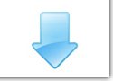

Safe Exam Browser 2.1.3 für Windows 7, 8.1 und 10
SHA1: c22a606a760a15ce2d0ab2d44c3823d3430ab5da
Download von neuer GitHub-Projektseite.
SEB 2.1.3 für Windows ermöglicht die Benutzung der Systemeinstellungen für die Konfiguration von Proxy-Servern und beseitigt mehrere Fehler (ein baldiges Update wird deshalb empfohlen):
- Aktuelle Versionen von Internet Explorer, Edge und Windows 10 bemängeln eine fehlerhafte Signatur beim Download und der Installation von SEB 2.1.2. Dies hängt damit zusammen, dass Microsoft keine unsicheren SHA1 Codesignaturen mehr akzeptiert. SEB 2.1.3 ist mit einem neuen, sicheren SHA-256 Zertifikat signiert.
- Die Benutzung der Systemeinstellungen für die Konfiguration von Proxy-Servern ist nun möglich.
- Der SEB Windows Dienst startete nicht richtig auf einigen Geräten und hat möglicherweise gewisse andere installierte Programme beeinträchtigt.
- Widerherstellung der Optionen im Windows Sicherheitsbildschirm (Ctrl-Alt-Delete) nach einem erzwungenen Neustart ist nun nochmals zuverlässiger.
Weitere Funktionen:
- Safe Exam Browser enthält einen Touch-optimierten Modus für Windows-Tablet.
- Eine Sicherheitsfunktion überwacht Prozesse und verhindert, dass nicht erlaubte Applikationen geöffnet und aktiviert werden und Fenster anzeigen.
- Schaltflächen zum Neustarten der Prüfung, Neuladen der Seite, Wechseln der Tastaturbelegung und eine Anzeige der aktuellen Zeit verbessern die Bedienbarkeit in Prüfungen.
- Individuelle Proxy-Einstellungen, URL-Filter und Server-Zertifikate können pro Prüfung benutzt werden.
- Das SEB Config Tool wurde überarbeitet und erlaubt nun das komfortable Bearbeiten und Testen von SEB-Konfigurationsdateien.
Weitere Infos momentan nur englisch verfügbar.
|
 |
Safe Exam Browser SEB 2.1 für OS X 10.7*, 10.8, 10.9, 10.10 und 10.11
SHA1: 5c2e2f21805c75976d7a3b5496760e9b92bffb0f
Download von neuer GitHub-Projektseite.
Safe Exam Browser 2.1 für macOS bietet neue Funktionalität, verbesserte Bedienbarkeit und viele Verbesserungen in der Absicherung des Prüfungscomputers:
- Neue Tasten im SEB-Dock zum Neustarten der Prüfung, Neuladen der aktuellen Webseite und eine Anzeige der Uhrzeit verbessern die Usability in Prüfungen.
- Volle Kompatibilität mit OS X 10.11 El Capitan.
- Nun kann eingestellt werden, ob die Rechtschreib- und Grammatikprüfung und das Nachschlagen von Wörtern während einer Prüfung benutzt werden darf.
- Vergrössern/Verkleinern der ganze Webseite anstatt nur des Textes ist nun ebenfalls möglich. Das Zoomen kann auch komplett ausgeschaltet werden.
- SEB erkennt jetzt, wenn versucht wird den Benutzer zu wechseln und sperrt anschliessend den Zugriff auf die Prüfung.
- In SEB 2.1 kann konfiguriert werden, dass für das Anzeigen von PDF-Dateien immer die sicherere Browser PDF-Vorschau benutzt wird, anstatt das Acrobat Reader PDF Plug-In.
- Individuelle Browser-User-Agent-Strings können pro Prüfung eingestellt werden. SEB identifiziert sich auch über seine Versionsnummer im User-Agent.
- Neues sebs:// Protokol hinzugefügt (zusätzlich zu seb://), welches die Benutzung von https zum Laden einer .seb Konfigurationsdatei erzwingt.
Andere Funktionen:
- Unterstützung für verschlüsselte SEB-Konfigurationsdateien (Dateityp .seb), die es erlauben, SEB pro Prüfung individuell zu konfigurieren. Dieselben .seb Dateien können nun für das Starten von Prüfungen mit SEB 2.x auf Windows-Rechnern und auf Macs benutzt werden.
- Eingebauter komfortabler Editor für die Plattform-unabhängigen SEB-Konfigurationsdateien, der auch alle zusätzlichen individuellen Einstellungen der Windows-Version konfigurieren kann.
- SEB blockiert auch die Bildschirmfoto-Funktion von macOS.
- SEB hat ein optionales Dock/Taskleiste eingebaut, in der ein Icon für den SEB-Browser mit Steuerelementen für seine offenen Browser-Fenster und ein Beenden-Button angezeigt werden.
- Neue Funktion zum Beenden von SEB, nachdem eine Prüfung abgeben wurde (ohne Eingabe eines Quit-Passworts). Dazu muss ein Quit-Link festgelegt werden und dieser dann auf der nach der Prüfungsabgabe angezeigten Ergebnis-Seite im Learning Management System platziert werden.
- Der Browser Exam Key ermöglicht die Authentifizierung der verwendeten SEB-Version und deren Einstellungen im Prüfungsmodul. Für die Learning Management Systeme Moodle, ILIAS und wurden Plug-Ins für diese Funktionalität veröffentlicht. Andere Systeme bieten eingebaute SEB-Unterstützung: OpenOLAT, Inspera Assessment und weitere.
- Neue Optionen im User-Interface: Die Grösse und Positionierung der Browser-Fenster (Hauptfenster mit der Prüfung und zusätzlich geöffnete Fenster) kann voreingestellt werden. Das Hauptfenster kann auch bildschirmfüllend dargestellt werden. Eine neue Aktivitätsanzeige zeigt den Ladevorgang an.
- SEB kann jetzt optional auch mit Menüleiste benutzt werden, damit und mit der neuen Toolbar in Browserfenstern sind Funktionen wie Einstellungen öffnen, 'Über SEB', Beenden, Seite neu laden, Schrift vergrössern/verkleinern und vorwärts/rückwärts im Browserverlauf leicht zugänglich (falls gewünscht).
- Neuer URL-Filter mit Lernmodus, um den Zugriff auf Weblinks und Ressourcen zu begrenzen. Die gespeicherten Konfigurationsdateien beinhalten URL-Filterregeln, die auch in SEB für Windows funktionieren.
- Verbesserte Sicherheit und Leistung.
Siehe Release Notes für eine komplete Liste von neuen Funktionen und Änderungen.
* Bemerkung: Unter OS X 10.7 kann SEB nur als Prüfungs-Client benutzt werden, das Einstellungen-Fenster ist nicht verfügbar. Verwenden Sie SEB unter OS X 10.8 oder neuer um eine .seb Konfigurationsdatei zu erstellen, die auch zum Konfigurieren von SEB-Clients unter OS X 10.7 verwendet werden kann. |
|
Quiz-Modus Patch für Moodle 2.3
SHA1: 6d43851950e7e7d029d2320f5641d9cb85c9ff16
MD5: d0575b4ba1ba6125dc8a5ed1e957b713
Dieser Patch sorgt dafür, dass der Prüfungsmodus in Moodle 2.3.x wieder korrekt mit Safe Exam Browser funktioniert, d.h. alle Navigationslinks für andere Bereiche des LMS während der Prüfung ausgeblendet werden. In Moodle 2.4 wird die Korrektur integriert sein, untenstehend eine kurze Anleitung (für Moodle-Administratoren), wie der Patch auf Moodle 2.3-Versionen angewendet werden kann:
- Zip-Datei enpacken.
- Die Passagen mit zusätzlichen Patch-Code starten mit // Voma add start und enden mit // Voma add end und befinden sich jeweils fast/ganz am Ende der Dateien.
- Da sich die beiden Dateien attempt.php und summary.php in verschiedenen Moodle 2.3.x-Versionen unterscheiden können, sollte man nur den Patch-Code zwischen // Voma add start/end an die richtige Stelle in die zwei betroffenen Dateien der entsprechenden Moodle-Installation kopieren.
|
|